CQRS Pattern¶
1. CQRS là gì?¶
CQRS là viết tắt của Command Query Responsibility Segregation.
Đây là một Architectural Pattern dùng để tách riêng:
- Command: các thao tác làm thay đổi trạng thái hệ thống.
- Query: các thao tác chỉ đọc dữ liệu, không làm thay đổi trạng thái.
Nói đơn giản:
Ghi dữ liệu đi một đường.
Đọc dữ liệu đi một đường khác.
Ví dụ:
CreateOrderCommand: tạo đơn hàng mới.CancelOrderCommand: hủy đơn hàng.GetOrderDetailQuery: lấy chi tiết đơn hàng.GetOrderListQuery: lấy danh sách đơn hàng.
CQRS không nhất thiết có nghĩa là phải dùng hai database khác nhau. Ở mức đơn giản, nó chỉ cần là tách model và flow xử lý read/write để mỗi bên được tối ưu đúng mục tiêu của mình.
2. CQRS giải quyết vấn đề gì?¶
Trong các ứng dụng nhỏ, một service hoặc repository chung cho cả đọc và ghi thường vẫn đủ tốt:
public sealed class OrderService
{
public Task<Order> GetByIdAsync(Guid id);
public Task<IReadOnlyList<Order>> GetListAsync();
public Task CreateAsync(CreateOrderRequest request);
public Task CancelAsync(Guid id);
}
Nhưng khi hệ thống lớn dần, nhu cầu của hai phía bắt đầu khác nhau:
Phía ghi thường cần¶
- Validate business rule.
- Kiểm tra trạng thái hiện tại.
- Ghi transaction an toàn.
- Phát domain event.
- Bảo toàn tính nhất quán.
Phía đọc thường cần¶
- Trả dữ liệu nhanh.
- Join nhiều bảng để tạo view phù hợp màn hình.
- Pagination, filter, sort linh hoạt.
- Có thể dùng DTO phẳng, cache hoặc read model riêng.
Nếu ép cả hai dùng chung một model, code dễ gặp các vấn đề:
- Entity phục vụ write nhưng bị kéo sang làm response model cho read.
- Query đọc bị buộc đi qua quá nhiều rule không cần thiết.
- Write model phức tạp dần vì phải phục vụ cả nhu cầu hiển thị.
- Tối ưu hiệu năng cho read và đảm bảo invariant cho write kéo nhau theo hai hướng khác nhau.
CQRS tách hai mối quan tâm đó ra:
Command side -> tập trung vào thay đổi trạng thái đúng đắn
Query side -> tập trung vào trả dữ liệu phù hợp và nhanh
3. Cấu trúc tổng quát của CQRS¶

Một mô hình CQRS thường có các phần sau:
| Thành phần | Vai trò |
|---|---|
| Command | Diễn tả một ý định làm thay đổi hệ thống |
| Command Handler | Xử lý command, gọi domain logic, ghi vào write DB |
| Write DB | Nơi lưu dữ liệu chuẩn để đảm bảo tính nhất quán |
| Domain Event | Sự kiện phát sinh sau khi state thay đổi |
| Event Bus / Projector | Đẩy thay đổi sang read side |
| Projection / Read Model | Dữ liệu đã được tổ chức lại để phục vụ truy vấn |
| Query Handler | Đọc dữ liệu từ read model và trả về response |
| Read DB | Nơi tối ưu cho truy vấn |
Điểm quan trọng:
- Command không nên trả về một graph dữ liệu phức tạp để hiển thị.
- Query không được làm thay đổi state.
- Read model có thể khác hẳn write model nếu nhu cầu đọc khác nhu cầu ghi.
4. Command và Query khác nhau như thế nào?¶
| Tiêu chí | Command | Query |
|---|---|---|
| Mục tiêu | Thay đổi trạng thái hệ thống | Lấy dữ liệu |
| Có side effect không? | Có | Không nên có |
| Ví dụ | Tạo đơn, thanh toán, hủy vé | Lấy chi tiết đơn, danh sách đơn |
| Kết quả thường trả về | Id, status, result ngắn gọn | DTO phục vụ hiển thị |
| Tối ưu cho | Correctness, invariant, transaction | Read performance, shape dữ liệu |
Một cách nhớ nhanh:
Command hỏi: "Hệ thống cần thay đổi gì?"
Query hỏi: "Màn hình cần đọc dữ liệu gì?"
5. Ví dụ đơn giản trong C¶
Bước 1: Tạo Command và Query¶
public sealed record CreateOrderCommand(
Guid CustomerId,
IReadOnlyCollection<CreateOrderItemRequest> Items);
public sealed record GetOrderDetailQuery(Guid OrderId);
Bước 2: Tạo response model cho phía đọc¶
public sealed class OrderDetailDto
{
public Guid Id { get; init; }
public string Code { get; init; } = default!;
public string CustomerName { get; init; } = default!;
public decimal TotalAmount { get; init; }
public string Status { get; init; } = default!;
public DateTime CreatedAt { get; init; }
}
Bước 3: Command Handler¶
public sealed class CreateOrderCommandHandler
{
private readonly IOrderRepository _orderRepository;
private readonly IUnitOfWork _unitOfWork;
private readonly IDomainEventPublisher _eventPublisher;
public CreateOrderCommandHandler(
IOrderRepository orderRepository,
IUnitOfWork unitOfWork,
IDomainEventPublisher eventPublisher)
{
_orderRepository = orderRepository;
_unitOfWork = unitOfWork;
_eventPublisher = eventPublisher;
}
public async Task<Guid> HandleAsync(CreateOrderCommand command)
{
var order = Order.Create(command.CustomerId, command.Items);
await _orderRepository.AddAsync(order);
await _unitOfWork.SaveChangesAsync();
await _eventPublisher.PublishAsync(new OrderCreatedEvent(order.Id));
return order.Id;
}
}
Bước 4: Query Handler¶
public sealed class GetOrderDetailQueryHandler
{
private readonly OrdersReadDbContext _dbContext;
public GetOrderDetailQueryHandler(OrdersReadDbContext dbContext)
{
_dbContext = dbContext;
}
public Task<OrderDetailDto?> HandleAsync(GetOrderDetailQuery query)
{
return _dbContext.OrderDetails
.Where(x => x.Id == query.OrderId)
.Select(x => new OrderDetailDto
{
Id = x.Id,
Code = x.Code,
CustomerName = x.CustomerName,
TotalAmount = x.TotalAmount,
Status = x.Status,
CreatedAt = x.CreatedAt
})
.SingleOrDefaultAsync();
}
}
Ở ví dụ này:
CreateOrderCommandHandlerquan tâm đến business rule và ghi dữ liệu đúng.GetOrderDetailQueryHandlerquan tâm đến shape trả về phù hợp cho màn hình.- Hai bên có thể cùng dùng một database hoặc dùng read/write database tách riêng tùy độ phức tạp hệ thống.
6. Luồng CQRS trong nghiệp vụ đặt hàng¶

Trong ví dụ đặt hàng:
Phía command¶
- Client gửi
PlaceOrderCommand. CommandHandlervalidate business rule.- Ghi order vào write DB.
- Phát
OrderPlaceddomain event.
Phía query¶
- Projector lắng nghe
OrderPlaced. - Cập nhật read model dành riêng cho màn hình.
- Client gửi
GetOrderDetailQuery. QueryHandlerđọc từ read DB và trả DTO tối ưu cho UI.
Luồng này cho phép:
- write side giữ rule nghiệp vụ chặt chẽ,
- read side được tối ưu cho tốc độ và format dữ liệu,
- mỗi phía phát triển theo nhu cầu riêng.
7. Các mức độ áp dụng CQRS¶
CQRS không phải chỉ có một kiểu “đầy đủ” duy nhất.
Mức 1: Tách handler, dùng chung database¶
CommandHandler -> cùng DB
QueryHandler -> cùng DB
Phù hợp khi:
- muốn code rõ hơn,
- write/read logic đã khác nhau,
- nhưng chưa cần hạ tầng phức tạp.
Mức 2: Tách read model trong cùng database¶
Write tables
Read views / projection tables
Phù hợp khi:
- màn hình đọc cần join/phẳng hóa dữ liệu riêng,
- nhưng vẫn muốn giữ vận hành đơn giản.
Mức 3: Tách read database riêng¶
Write DB -> event -> read DB
Phù hợp khi:
- hệ thống đọc nhiều hơn ghi,
- cần scale query riêng,
- hoặc read model rất khác write model.
Thông thường, nên bắt đầu từ mức đơn giản nhất đủ giải quyết vấn đề.
8. CQRS trong ASP.NET Core¶
Trong ASP.NET Core, CQRS thường đi cùng các khái niệm:
CommandQueryHandlerDTODomain Event- đôi khi có
Mediator
Ví dụ controller:
[ApiController]
[Route("api/orders")]
public sealed class OrdersController : ControllerBase
{
private readonly CreateOrderCommandHandler _createOrderHandler;
private readonly GetOrderDetailQueryHandler _getOrderDetailHandler;
public OrdersController(
CreateOrderCommandHandler createOrderHandler,
GetOrderDetailQueryHandler getOrderDetailHandler)
{
_createOrderHandler = createOrderHandler;
_getOrderDetailHandler = getOrderDetailHandler;
}
[HttpPost]
public async Task<ActionResult<Guid>> Create(CreateOrderRequest request)
{
var orderId = await _createOrderHandler.HandleAsync(
new CreateOrderCommand(request.CustomerId, request.Items));
return Ok(orderId);
}
[HttpGet("{id:guid}")]
public async Task<ActionResult<OrderDetailDto>> GetById(Guid id)
{
var order = await _getOrderDetailHandler.HandleAsync(
new GetOrderDetailQuery(id));
return order is null ? NotFound() : Ok(order);
}
}
Nếu dùng MediatR hoặc một mediator abstraction, controller có thể gọn hơn nữa:
var orderId = await _mediator.Send(new CreateOrderCommand(...));
var order = await _mediator.Send(new GetOrderDetailQuery(id));
Lưu ý: Mediator không phải là CQRS. Mediator chỉ là một cách dispatch command/query đến handler. CQRS là quyết định tách read và write.
9. CQRS khác gì CRUD truyền thống?¶
| Tiêu chí | CRUD truyền thống | CQRS |
|---|---|---|
| Model | Thường dùng chung cho đọc và ghi | Có thể tách read model và write model |
| Service | Một service xử lý cả read/write | Tách command handler và query handler |
| Phù hợp với | Hệ thống đơn giản, logic ít khác biệt | Hệ thống có read/write khác nhau rõ rệt |
| Độ phức tạp | Thấp | Cao hơn |
| Tối ưu | Dễ bắt đầu | Dễ tối ưu từng phía về sau |
CRUD không hề “sai”. Với nhiều hệ thống, CRUD là lựa chọn tốt hơn CQRS vì đơn giản, ít ceremony và dễ vận hành hơn.
10. CQRS khác gì Event Sourcing?¶
Hai khái niệm này hay đi cùng nhau nhưng không phải một.
| Tiêu chí | CQRS | Event Sourcing |
|---|---|---|
| Trọng tâm | Tách read và write | Lưu state dưới dạng chuỗi event |
| Có cần event không? | Không bắt buộc | Có |
| Có cần read model riêng không? | Không bắt buộc nhưng thường hữu ích | Thường cần để query hiệu quả |
| Có thể dùng độc lập không? | Có | Có |
Bạn có thể:
- dùng CQRS mà không dùng Event Sourcing,
- dùng Event Sourcing kết hợp CQRS,
- hoặc không dùng cả hai.
11. CQRS khác gì với phân tách BLL / DAO?¶
Nếu bạn quen kiến trúc:
Controller -> BLL -> DAO
thì CQRS không chỉ là việc đã có BLL rồi gọi nhiều DAO khác nhau.
Điểm khác nằm ở chỗ:
- BLL/Service Layer nói về phân lớp trách nhiệm.
- CQRS nói về tách riêng luồng đọc và luồng ghi.
Ví dụ:
OrderService
-> CreateOrderAsync()
-> GetOrderDetailAsync()
vẫn là service layer bình thường.
Khi chuyển sang CQRS:
CreateOrderCommandHandler
GetOrderDetailQueryHandler
thì:
- phía command có thể dùng domain model, transaction, rule nghiệp vụ,
- phía query có thể trả DTO phẳng, join tối ưu, thậm chí dùng read DB riêng.
Nói ngắn:
Service Layer là cách chia tầng.
CQRS là cách tách trách nhiệm đọc và ghi trong tầng đó.
12. Khi nào nên dùng CQRS?¶
| Trường hợp | Có nên dùng? | Ghi chú |
|---|---|---|
| Read và write có nhu cầu khác nhau rõ rệt | Có | Ví dụ dashboard đọc phức tạp, write có rule nghiệp vụ chặt |
| Query cần tối ưu khác hẳn entity write model | Có | Read DTO, denormalized view, projection |
| Hệ thống đọc nhiều hơn ghi và cần scale riêng | Có | Có thể cân nhắc read DB riêng |
| Nghiệp vụ có domain event và nhiều projection | Có | CQRS thường phát huy tốt |
| App CRUD đơn giản | Thường chưa cần | Dễ over-engineering |
| Team chưa cần tối ưu riêng read/write | Chưa cần | Giữ kiến trúc đơn giản trước |
13. Khi nào không nên dùng CQRS?¶
Không nên dùng CQRS chỉ vì:
- muốn code trông “enterprise” hơn,
- thấy dự án khác dùng nên làm theo,
- app hiện tại chỉ là CRUD cơ bản,
- team chưa có nhu cầu thực sự phải tách read/write.
Nếu:
- cùng một entity vừa đọc vừa ghi rất đơn giản,
- query không có gì đặc biệt,
- không có lý do hiệu năng hoặc mô hình hóa rõ ràng,
thì CQRS thường chỉ làm tăng số lượng class mà chưa đem lại nhiều giá trị.
14. Ưu điểm¶
- Tách rõ read concern và write concern.
- Read model có thể tối ưu đúng theo nhu cầu màn hình.
- Write side giữ domain model sạch hơn, tập trung vào business rule.
- Dễ mở rộng khi query và command ngày càng khác nhau.
- Có thể scale phía đọc và ghi độc lập nếu cần.
- Phù hợp với hệ thống có domain event, projection, async processing.
15. Nhược điểm¶
- Tăng số lượng class và khái niệm phải quản lý.
- Debug luồng end-to-end phức tạp hơn.
- Nếu dùng read model riêng, có thể xuất hiện eventual consistency.
- Đồng bộ projection, retry, idempotency cần được thiết kế cẩn thận.
- Không phù hợp với mọi hệ thống; dùng sớm quá dễ thành over-engineering.
16. Lưu ý khi dùng¶
- Bắt đầu đơn giản: tách handler trước, chưa cần tách database ngay.
- Query handler không nên làm thay đổi state.
- Command handler không nên biến thành nơi trả response phức tạp cho UI.
- Nếu dùng read model riêng, phải chấp nhận và giải thích rõ độ trễ đồng bộ dữ liệu.
- Event bus, outbox, projector và retry cần được thiết kế kỹ nếu hệ thống chạy phân tán.
- Đừng dùng CQRS để né việc thiết kế domain model tốt.
17. Ví dụ sai thường gặp¶
Sai 1: Tách file nhưng không tách trách nhiệm thật¶
CreateOrderCommandHandler
GetOrderDetailQueryHandler
nhưng cả hai vẫn:
- dùng cùng một entity cho mọi mục đích,
- query handler nhồi thêm side effect,
- command handler trả về response model khổng lồ cho UI.
Khi đó chỉ là đổi tên class, chưa phải CQRS có ý nghĩa.
Sai 2: Dùng hai database ngay từ đầu dù chưa cần¶
Nếu hệ thống còn nhỏ, read/write chưa khác biệt nhiều, thêm:
- event bus,
- projector,
- read DB riêng,
- đồng bộ bất đồng bộ,
quá sớm sẽ làm chi phí vận hành tăng mạnh.
Sai 3: Hiểu CQRS là bắt buộc phải đi cùng Event Sourcing¶
Không đúng. CQRS có thể tồn tại độc lập hoàn toàn với Event Sourcing.
18. Tóm tắt¶
CQRS phù hợp khi nhu cầu ghi đúng và nhu cầu đọc nhanh / đọc đúng shape đã khác nhau đủ rõ để không nên ép chúng dùng chung một mô hình nữa.
Một câu dễ nhớ:
CQRS tốt khi read và write có nhu cầu khác nhau thật.
CQRS thừa khi một mô hình CRUD đơn giản đã giải quyết vấn đề rất tốt.